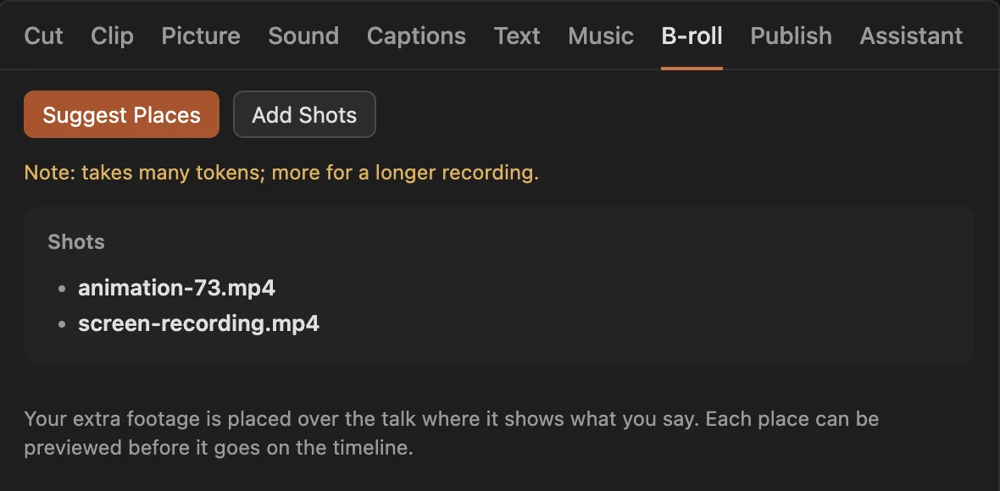

B-roll
B-roll is extra footage over your talk: the product you mention, the place you describe. The B-roll tab puts your shots where they show what you say.

How it works
- Add your shotsAdd Shots adds video files you filmed or have the rights to.
- Let it suggest placesSuggest Places asks your AI model where in the talk each shot fits. They are listed under Suggested places.
- Check each onePreview shows it in the viewer before it goes on the timeline. Then Add or Skip.
Added shots go on their own track over the recording, and can be moved, trimmed and graded like any clip.
To find a shot in a pile of footage by describing it, see Find in footage.